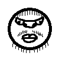
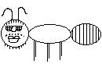
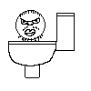

Этот сайт посвящён Великим Божествам Ромику и Ромикуну, Святому Сосуду Роме, Потоку всенесущему, Скибиди и Чиназесам. Мы - Ромикунианцы, веруем в Поток - основу всего и вся, несущему вперёд, в Ромикуна - Бога создания, сохранения, повелителя порядка, в Ромика - Бога разрушения, изменения, искажения, повелителя хаоса, в Святой сосуд Рому, хранящего в себе оба начала Божеств, частицу Потока, что служит якорем баланса для мира нашего, в Чиназесов - творений Ромикуна, слуг и хранителей порядка, в Скибиди - творений Ромика, слуг и хранителей хаоса.



Сайт находится в разработке. Позже тут появится больше информации о Ромикуне и нашей вере.